COVID 19 İLE MÜCADELE İÇİN NE YAPABİLİRİZ?
Covid 19 pandemisi ile baş etmenin en temel kuralı hastalığa yakalanmamaktır. Bu nedenle, başka ne önlem alırsak alalım, maske-mesafe-temizlik kuralları her zaman en önemli kurallarımız olacaktır.
Uyarı: Bunlara ilave olarak her ne kullanacak olursanız olun, kullanmadan önce doktorunuza danışın.
Tıp literatüründe bir hastalığın tam olarak anlaşılması, buna uygun tedavi protokollerinin tam olarak belirlenmesi, tedavi yan etkilerinin anlaşılması yıllar sürer. Bu durum ilaç ve aşı çalışmaları için de geçerlidir. Hastalık ve tedavi konusundaki bilgiler sürekli güncellenir. Bu nedenle de bu yazımızda, hastalığa spesifik tedavilerden çok bağışıklık ve bütünsel sağlık ekseninde kendimiz için yapacaklarımızdan bahsedeceğiz.
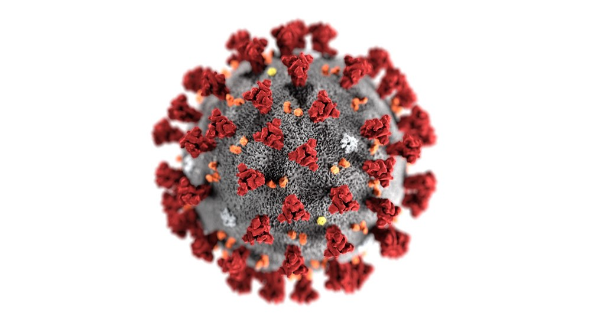COVİD OLMADAN
Hastalığın şiddetini belirleyen temelde iki faktör bulunmaktadır. Bunlardan ilki başlangıç aşamasında alınan virüsün miktarıdır (1,2,3,4,). Başlangıçta ne kadar fazla virüs mukozalara yerleşirse, toplam çoğalan virüs sayısı da ona paralel olarak yüksek çıkacaktır. Bu noktada, bulaşın engellenmesi için alınan maske-mesafe-temizlik tedbirleri elimizdeki en büyük kozu oluşturmaktadır.
Buna ilave olarak bir uçucu yağ olan okaliptüs yağının içindeki bazı etken maddelerin (özellikle 1-8 sineol) ortamdaki Covid 19 virüsünü inaktive edebildiğine yönelik umut verici çalışmalar bulunmaktadır. Bu çalışmalar henüz bir korunma ve tedavi metodu olarak önermek için yeterli seviyede değildir (5,6). Potansiyel yan etkisinin az olması nedeni ile ek tedbir olarak kullanılabilir. Bu yağların tıbbi ürün olduğu unutulmamalıdır. Uçucu yağlar cilt ile direk temas ettirilmezler. Belirli bir miktarının ortam havasında olması sağlanarak kullanılırlar.
Ağız içinde çinko tuzlarının pastil olarak eritilmesinin, virüsün hücre içine girişini ve hücre içi replikasyonunu (çoğalmasını) engellediğini gösteren çalışmalar mevcuttur (7,8). Oral bölgede etkinliği yaklaşık dört saat süren bu preparatlar özellikle kalabalığa girilmesi gereken zorunlu hallerde ek destek olarak kullanılabilir.
Hastalığın şiddetini etkileyen ikinci faktör ise kişinin bağışıklık sistemidir. Bağışıklığı destekleyecek her türlü uygulama covid-19 ile olan mücadeleye katkı sağlayacaktır.
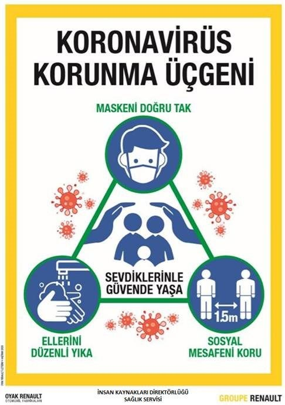Vitaminler ve Mineraller
D vitamini:
Bir steroid hormon olan aktif D vitamini 1,25 (OH) D, diğer pek çok işlevinin yanı sıra bir bağışıklık sistemi modülatörüdür (düzenleyicisidir). Bir yandan bağışıklığı güçlendirirken diğer yandan aşırı uyarılmasını engeller (9).
D vitamin takviyesi günlük veya haftalık dozlarda alındığında akut solunum yolu hastalıkları açısından koruyucudur. Aylık yükleme dozlarında ise böyle bir etki görülmemiştir (10).
Klinikte görev yapan enfeksiyon hastalıkları uzmanı meslektaşlarımız D vitamini seviyesi optimum (50-80ng/ml) olan covid-19 hastalarının daha iyi bir kliniğe sahip olduğunu belirtmektedir. Bu veriyi destekleyen çalışmalar mevuttur (11,12) ancak nedensellik durumu kesin değildir.
D vitamini doktor gözetiminde kullanılması gereken bir maddedir. Vücutta fazla olması da farklı zararlara neden olmaktadır. Bu nedenle de başlamadan önce başlangıç seviyesini bilmekte fayda vardır.
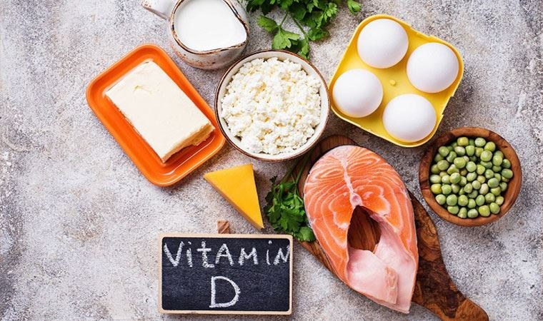C vitamini
C vitamini bağışıklığın optimum çalışması için gereklidir. Suda çözünen ve vücutta depolanmayan C vitamininin her gün alınması gerekmektedir. Normal zamanda meyve ve sebzelerle alınan C vitamini vücut için yeterli olabilir. Hastalık durumunda ise ihtiyaç çok artacağı için dışarıdan takviye edilmesi gerekmektedir.
Covid 19 tedavisinde c vitaminin etkinliğini gösteren sonuçlar çelişkilidir. Buradaki fark muhtemelen dozdan kaynaklanmaktadır. “Yüksek doz C vitamininin klinik uygulamasının, güçlü antioksidan serbest radikallerin üretimi ve vasküler enflamatuar eksüdasyonun inhibisyonu yoluyla hastaların prognozunu iyileştirmesi beklenmektedir.” (13,14)
C vitamini yan etkisi neredeyse hiç olmayan, potansiyeli yüksek bir bağışıklık desteğidir. Aynı zamanda güçlü bir antioksidandır.
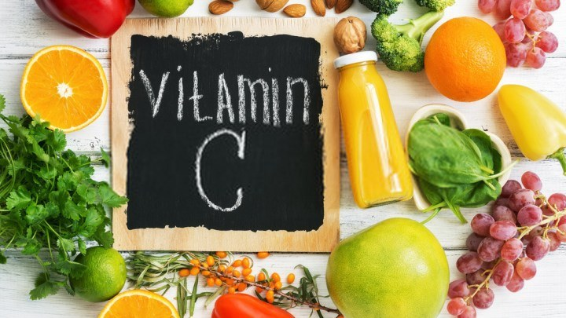Çinko
“Çinkonun antiviral ve antibakteriyel bağışıklığı modüle ettiği ve enflamatuar yanıtı düzenlediği bilinmektedir. Klinik veri olmamasına rağmen, bazı endikasyonlar, çinko durumunun modülasyonunun COVID-19'da faydalı olabileceğini düşündürmektedir.” (15)
Çinko bağışıklık sisteminin düzenli çalışması için önemlidir. Eksikliği bağışıklığın doğru çalışmamasına yol açacaktır.
“Çinko takviyesi, mukosiliyer klirensi iyileştirir, epitelin bütünlüğünü güçlendirir, viral replikasyonu azaltır, antiviral bağışıklığı korur, hiperenflamasyon riskini azaltır, antioksidatif etkileri destekler ve böylece akciğer hasarını ve ikincil enfeksiyonları en aza indirir.”(7)
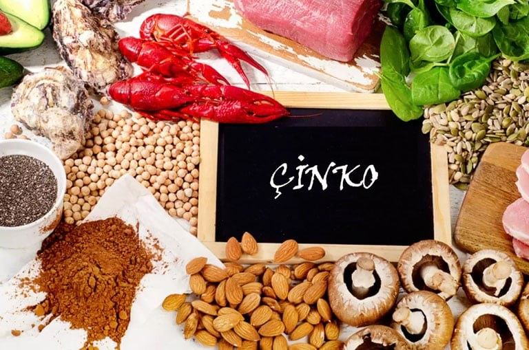Selenyum
Antioksidan enzim mekanizmasının (selenoproteinlerin) temel kofaktörü olan selenyumun eksikliğinde bağışıklık sisteminde bir zayıflama meydana gelecektir. Ayrıca eksikliğinde serbest oksijen radikallerinin yeterince temizlenememesi, bağışıklığın aşırı uyarılmasını da tetikleyebilir.
“Avrupa'nın büyük bölümlerindeki popülasyonlardaki selenyum seviyeleri, selenoproteinlerin yeterli ekspresyonu için gereken yaklaşık 100 ug / L'lik bir eşiğin oldukça altındadır. Yetersiz selenyum alımına, topraktaki ve sonuç olarak tahıllarda ve diğer gıda bitkilerinde ve çiftlik hayvanlarını otlatmak için kullanılan yemlerde düşük selenyum içeriği neden olur” (16).
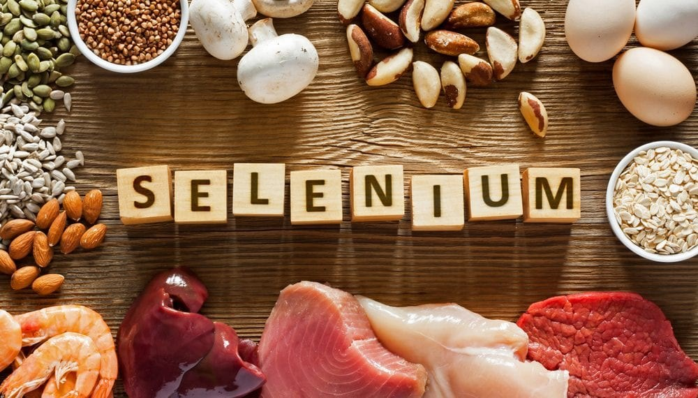Aktif Bağışıklık Destekleri
Sambucus nigra
Kara mürver olarak da bilinen sambucus nigra uzun yıllardır yaygın bir coğrafyada antiviral özelliği nedeni ile kullanılmaktadır (17). Hayvan çalışmalarında bir koronavirüs türü olan kuş enfeksiyöz bronşit virüsünü (IBV) inhibe ettiği gösterilmiştir. (18).
Sağlıklı bağışıklık sistemini aktive ettiğini gösteren çalışmalar mevcuttur (19). Bunun sonucunda üst solunum yolu hastalıklarının iyileşme süresini kısaltmaktadır (20). Aynı zamanda hastalık sırasında ortaya çıkan belirtileri (ateş, baş ağrısı, burun tıkanıklığı ve burun mukozası akıntısı gibi influenza tipi semptomları) de rahatlatmaktadır (21).
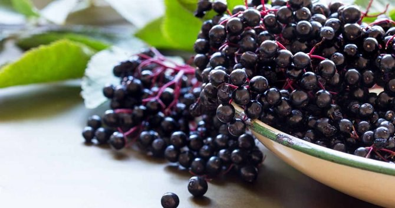Beta glukan
Beta-glukan, yulaf veya ekmek mayasından elde edilen bir liftir. (22) Sağlıklı bağışıklık sistemini güçlendirmek için kullanılırlar. IL-10 gibi anti-enflamatuar sitokinleri artırarak, doğuştan gelen bağışıklık tepkilerini hazırlayarak veya eğiterek bağışıklık aktivitesini modüle ettiği bilinmektedir (23).
Β-glukanların immün modüle edici etkilerini bildiren yaklaşık 7.000 yayın bulunmaktadır (23).
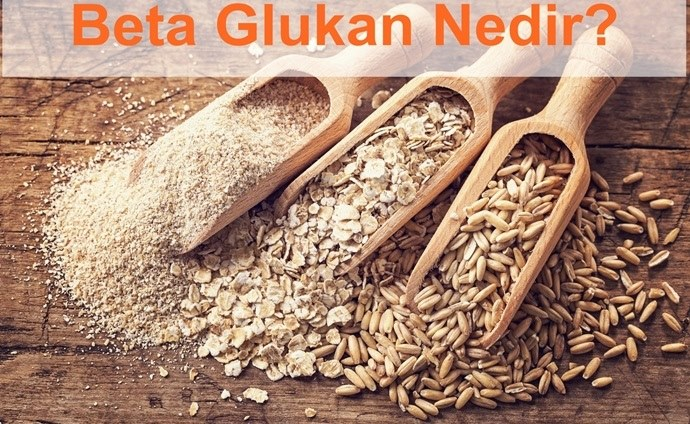Ekinezya
Bazı ekinezya türleri (E. purpurea, E. angustifolia ve E. pallida) tıbbi amaçlar için kullanılmaktadır. Ekinezya dikkate değer bir immünomodülatör, antienflamatuar ve antiviraldır (24). Aktardan alıp çayını yaptığımız ekinezya aynı etkiyi göstermeyecektir. Bu nedenle tıbbi amaçlar için yetiştirilen ve tıbbi amaçlara uygun olarak özü çıkartılıp standartlaştırılmış ürünler kullanılmalıdır.
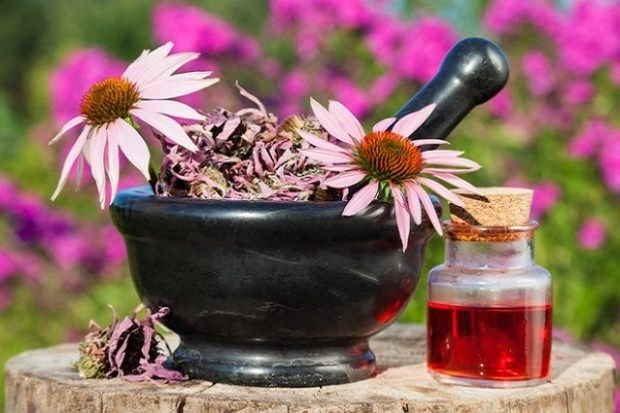Probiyotikler ve türevleri
Vücut bağışıklık sistemi hücrelerinin %70-80’i bağırsaklardaki lenfoid dokuda yerleşiktir ve bu hücreler özel reseptörleri sayesinde mikrobiyatadaki (bağırsak bakterileri) değişiklikleri hissedip takip ederler. (25). Bu nedenle de sağlıklı bir bağışıklık için bağırsaklarımızda doğru mikrobiyata kombinasyonu olmalıdır. Bu bakterileri içeren preparatlara probiyotik denir.
Bir ürünün probiyotik sayılabilmesi için kutusunda içindeki canlı bakterinin cins adı, tür adı ve suş kodu ile bakterinin miktarı bulunmalıdır. Bu bakterinin sağlık faydalarıda bilimsel literatürde ispatlı olarak yer almalıdır.
Her probiyotik ürün ispatladığı faydaya göre, farklı bir sağlık durumuna etki eder. (26)
Probiyotiklerin beslenmesi için gereken gıdaya prebiyotik denir.
Probiyotik olma şartlarını karşılamayan ama içinde faydalı bakteri barındırdığını bildiğimiz gıdalar da vardır. Bunların başında yoğurt, kefir gibi fermente gıdalar yer almaktadır. Bunların tüketilmesi de bağırsakta doğru bakterilerin yerleşmesine yardımcı olur.
Mikrobiyatayı bozan şeylerin başında gereksiz antibiyotik kullanımı gelmektedir. Bir diğer kötü etkiyi de kötü beslenmek (çöp gıdalar, paketli ürünler, basit şeker ve tatlandırıcılar) yapmaktadır. Mikrobiyatanın bozulması vücuttaki pek çok sistemi bozacaktır. Bunların başında da bağışıklık sistemi gelmektedir.
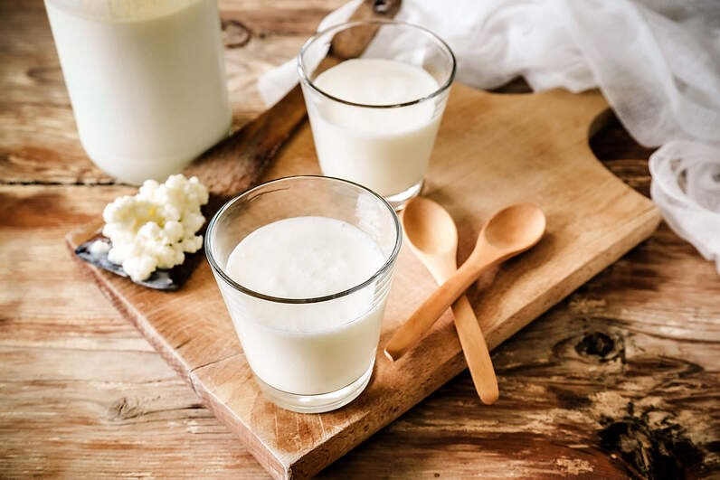Beslenme
Vücudun doğru çalışası için doğru yapı taşlarına ulaşması çok önemlidir. Bu nedenle nitelikli ve dengeli bir beslenme tüm yaşamsal fonksiyonların temelini oluşturacaktır. Makro beslenme (protein, yağ ve karbonhidrat) kısmına dikkat ederken, mikro beslenme (vitamin, mineral ve bazı bitkisel moleküller) kısmını da ihmal etmemeliyiz. Bu yönden birbirinden farklı renkte sebzeler tüketmek bize kazanç sağlayacaktır. Genelde aynı renkteki sebzeler aynı tür mikro besinleri içerme eğilimindedir. Farklı fitobesinlerden faydalanabilmek için çeşitlilik önemlidir.
Doğal olmayan içerikleri ile paketli gıdaları hayatımızdan çıkarmak, vücudun bunları işlemek için harcadığı eforu daha faydalı şeylere harcamasını sağlayacaktır.
Basit karbonhidratlar (şeker, beyaz un vb.) vücutta insülin mekanizmasını fazla etkiledikleri için hem bağışıklığı olumsuz etkileyecek hem de dikkat dağınıklığı, çabuk acıkma ve uyuklama benzeri akut etkiler gösterecektir. Üstelik bu şekilde beslenmek pek çok metabolik hastalığa da zemin hazırlayacaktır.
Obezite Covid-19 için ciddi bir risk unsurudur “Fazla kalori alımı ve / veya azalan enerji harcaması, fazla besinleri barındırmak ve depolamak için yağ dokusunun hızlı bir şekilde genişlemesine yol açar. Bununla birlikte, obezitenin neden olduğu genişleme, yağ dokusunun işlevini ve yapısını değiştirir ve genişleyen adipositler apoptotik hale gelir ve inflamatuar adipoz oluşturmak için makrofajları ve diğer hücreleri çeker” (27). Bu durum bağışıklık sisteminin sürekli uyarılması demektir. Bunun sonucunda bağışıklık gerektiği anda (hastalığın ilk fazında) gerekli yanıtı veremez. Bağışıklık tepkisinin fazla uyarılmasının tehlikeli olduğu hastalığın ikinci fazında sitokin fırtınasını destekler. Tüm bunlardan korunmak için ideal kiloda olmak son derece önemlidir (bkz:fitbrokoli)
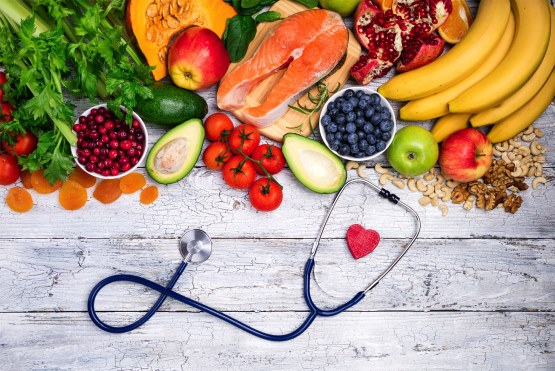Spor
Pandemi şartları hayatımızı hiç olmadığı kadar hareketsiz hale getirdi. Bu dönem santral obezitenin artması (göbek bölgesinde simit tipi yağlanma) pek çok metabolik hastalığın zeminini hazırlamaktadır. Bu metabolik hastalıkların hemen hepsi de bağışıklığı olumsuz etkilemektedir (28).
Fiziksel aktivite orta seviyede yapıldığında bağışıklığı doğrudan destekler. (29). Bu nedenle de hayatımızın daha da hareketsiz hale geldiği pandemi şartlarında planlı ve düzenli egzersiz yapmak önem kazanır.
Ağır fiziksel aktivite (maraton koşmak, vücudu zorlayacak seviyede ağırlık kaldırmak vs.) bağışıklığı zayıflatabilir. İdeal olan yoga, pilates gibi vücudu normal aralığında zorlayan orta şiddetli egzersizlerdir. Bunların pek çoğu ev şartlarında da yapılabilir. Açık havada yapılacak egzersizlerde ise, diğer insanlardan mümkün olduğunca uzak durmak, maske takmak ve hijyen kurallarına uymak önemlidir.
Yoga hem nefes temelli olması ve akciğerlerin solunum kapasitesini arttırması (30), hem her yaş grubunda güvenli bir şekilde uygulanabilmesi hem de ev şartlarında rahat bir şekilde faydalanılabilen bir egzersiz türü olarak öne çıkmaktadır.
“SKY (bir yoga türü) uygulaması, kalp atış hızını yavaşlatır, beyin perfüzyonunu artırır, hipoksi / hiperkapniyi önler, dikkati ve uyanıklığı artırır (vagal ileticiler yoluyla) ve enerjiyi geri kazandırır. SKY, gelişmiş biliş, kalp atış hızındaki değişiklikler ve vagus sinir stimülasyonu (VNS) yoluyla gelişmiş bağırsak işlevi dahil olmak üzere çeşitli otonomik etkilere neden olur” (31).
Surya Namaskar (güneşi selamlama) evde kolay uygulanabilen (internette videoları olan), bir yandan solunum kapasitesini arttırırken bir yandan da vücudu esneten bir yoga çalışmasıdır. Parasempatik uyarıyı arttırarak vücudu dinlenme ve onarım durumuna yaklaştırır. (32).
Yoga tüm bu etkilerinin yanında, stresi azaltarak da bağışıklığa katkı sağlar. Kortizol seviyesini azaltır. Vücudun adaptasyon yeteneğini arttırır. (33).
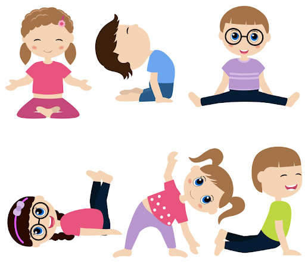Diğer
N-asetil sistein
N-asetil sistein halk arasında balgam söktürücü olarak da bilinir. En bilinen etkisi vücuttaki sekresyonun (balgam, sümük vs.) yumuşamasını ve rahat atılmasını sağlamasıdır. Bu etkinin işe yaraması için bol sıvı ile tüketilmelidir.
N-asetil sistein bir aminoasit formudur. Güçlü bir antioksidan ve antienflamatuardır(34). Ayrıca karaciğerde yer alan ve atıkları etkisizleştiren glutatyon enziminin temel yapı taşlarından biridir. Glutatyon enzimi güçlü bir antioksidandır. Hem iç hem de dış kaynaklı serbest oksijen radikalleri ile savaşır. Bu nedenle de hem hastalıkla mücadelede hem de hastalık süresince kullanılan ilaçların vücuttan uzaklaştırılmasında önemli görevleri vardır.
Covid 19 hastalığında kullanılmasının sitokin fırtınasını engellemesi teorik olarak mümkündür (35) ancak bu etkisi kanıtlanmamıştır.
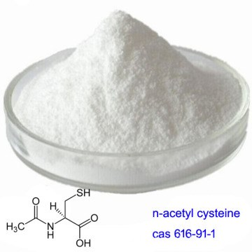Yeşil çay
Yeşil çayın aktif maddesi olan Epıgallocatechın Gallate (EGCG) anti dejeneratif, anti kanser, antioksidatif, hipoglisemik, antimikrobiyal ve antiviral özellik göstermektedir (36).
Epıgallocatechın Gallate’in laboratuvar şartlarında Covid 19 virüs enfeksiyonunu inhibe ettiği gösterilmiştir (37,38).
Çay yaprakları ağır metal biriktirebilmektedir. Biriktirdikleri ağır metali suya bırakmazlar. Bu nedenle içmeden önce yaprakları süzmek önemlidir.
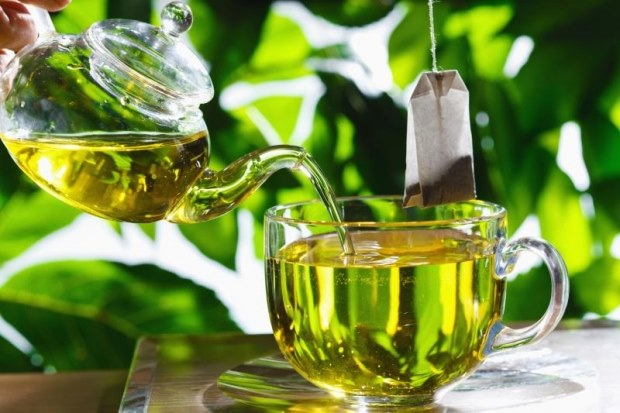Resveratrol
Başta üzüm olmak üzere pek çok meyvede doğal olarak bulunmaktadır. Çok güçlü bir antioksidandır ve yaşlanma karşıtı etki gösterir (39).
Epıgallocatechın Gallate gibi resveratrol de laboratuvar şartlarında Covid 19 virüsünü inhibe eder (40).
Anti-trombotik ve anti-enflamatuar özelliği nedeniyle Covid 19 sırasında oluşan olumsuz tablolarla mücadele edilmesine katkı sağlar (41).
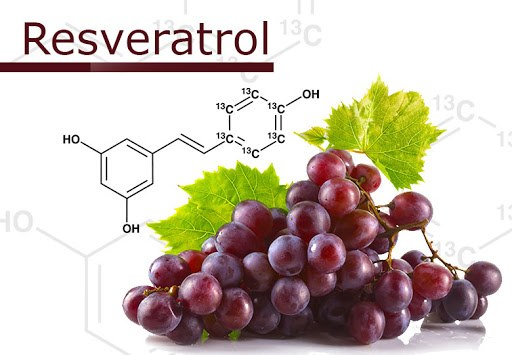HASTALIK SIRASINDA
Hastalık sürecinde esas olan değerlendirmeyi yapan doktorun düzenlediği tedavidir. Covid-19 salgını çıktığı günden beri, klinik gözlemler ve bilimsel çalışmalar ışığında elde edilen verilerle bir protokol geliştirilmiştir. Tedavi gelişim süreci henüz sonlanmış değildir.
Buna ek olarak, Covid-19 olmadan önce kullandığımız takviyelerin çoğunu kullanmaya devam etmek bedenimize hastalık ile savaşmasında katkı sağlayacaktır.
Covid-19 hastalığının iki fazı vardır. Birinci fazda virüs replikasyonu esastır. İkinci fazda ise vücudun bağışıklık tepkisi baskındır. Burada en istenmeyen tablolardan biri sitokin fırtınası olarak adlandırılan, bağışıklığın gereğinden fazla tepki vermesidir. Aktif bağışıklık desteklerini bu dönemde kullanmak, sitokin fırtınasını tetikleme riski olduğu için, tercih edilmemelidir.
Bağışıklığı dengelemeye yarayan bazı takviyeler de bulunmaktadır. Bunlar her ne kadar takviye edici gıda adı altında satılsalar da etkileri ve yan etkileri nedeni ile ilaçtırlar. Nitelikli bir değerlendirme sonrasında işinin ehli bir hekim tarafından başlanmalıdırlar.
Laboratuvar ortamında klorheksidin içeren gargaraların Covid 19 virüsünü inaktive edebileceğini gösteren çalışmalar mevcuttur. (42, 43) 23 Mart 2021 de yayınlanan bir çalışmaya göre klorheksidin kullanan spreyler ve gargaralar orofarengeal (ağız-boğaz bölgesinde) virüs yükünü azaltmaktadır(44). Bu çalışma “klorheksidin glukonat% 0.12 gargaranın günde iki kez kullanılmasını önermektedir: (1) burun deliklerine 1 ml püskürtün, (2) boğazı iyice çalkalayın. En az 30 saniye için 15 ml ve (3) arka boğaza üç kez (1,5 ml) püskürtmek için bir sprey aplikatör kullanın” diye önermektedir. Çalışmanın kendi içinde de belirttiği gibi, ağızdan uygulamak burun yoluyla virüs alımını ve virüsün burunda çoğalmasını engellememektedir. Klorheksidinin burundan kullanımının güvenliği için yeterli çalışma bulunmamaktadır.
Bol su tüketmek, her zaman olduğu gibi bu dönemde de vücudumuzu desteklemenin güzel bir yoludur. Sıcak ya da soğuk değil, ılık tüketmek idealidir.
İYİLEŞME SÜRECİ
Virüs vücuttan uzaklaştırıldıktan sonra, hastalığın şiddetine bağlı olarak bazı fonksiyonların toparlaması zaman almaktadır. Bu nedene de bazı noktalarda rehabilitasyona ihtiyaç duyulmaktadır. “COVID-19 enfeksiyonunun beklenen komplikasyonları arasında uzun süreli solunum bozukluğu ve nöromüsküler disfonksiyon, psikolojik disfonksiyon ve bilişsel bozukluk gibi YBÜ (yoğun bakım ünitesi) sonrası komplikasyonlar bulunur.” “Şiddetli koronavirüs enfeksiyonlarını takiben anksiyete, depresyon, uykusuzluk ve travma sonrası stres bozukluğu yaygındır” (45). Psikolojik destek ihtiyacı için sağlık servisi bünyesinde bir psikolog haftada iki gün hizmet vermektedir.
Solunum sistemi bu hastalıktan en çok etkilenen sistemlerin başındadır. Nefes egzersizleri sistemin düzgün çalışmaya başlamasına katkı sağlayacaktır (46).
Hem kas iskelet sisteminin toparlanması hem de psikolojik faktörlerle mücadele açısından egzersiz (başlangıçta hafif, zamanla orta şiddette) ve meditasyon kişinin toparlanma sürecini kısaltacaktır. Bu noktada hem kas iskelet sistemi hem solunum ve dolaşım sistemi hem de stres üzerindeki olumlu etkileri ile pilates veya yoga uygulanabilir.
Vücut bu dönemde gerek içeriden gerekse dışarıdan pek çok serbest oksijen radikaline maruz kalacaktır. Bu nedenle de antioksidan özelliği bilinen takviyelere devam etmek fayda sağlayacaktır.
Tedavi sırasında alınan ilaçlar karaciğer üzerinde yük oluşturacağından bir süre daha N- Asetil Sistein kullanımı anlamlı olacaktır.
Beslenmenin, hastalık öncesinde ve hastalık sırasında olduğu gibi tam ve dengeli olması da vücudun onarımı için gerekli hammaddeyi sağlayacaktır.
Bu hastalık tıp literatürü için yeni olduğundan, uzun vadeli etkileri tam olarak bilinmemektedir. Bu nedenle de rehabilitasyon dönemini tam olarak öngörmek mümkün değildir.
Yazıyı oluştururken bilimsel olarak ispatlanmış bilgilere sadık kaldım. Tırnak içinde yazılan metinler ilgili makaleden birebir alınıp çevrilmiştir. Yazının tamamı bilgi vermeyi amaçlamış olup tedavi yönergesi yerine geçmez. Lütfen herhangi bir takviye kullanmadan önce hekiminize danışınız.
Umarım yazının ikinci ve üçüncü kısımlarına hiçbir zaman gerek kalmaz. Konu oldukça geniş olduğu için atladığım yerler oldu ise affınıza sığınıyorum. Her türlü soru ve yorum için bana mail adresimden ulaşabilirsiniz.
Hepinize sağlıklı günler dilerim.
Dr. Murat GÖKDUMAN